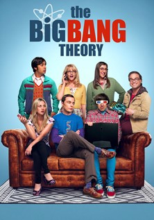

Welcome Index PT
Titanic

O RMS Titanic foi um navio de passageiros britânico operado pela White Star Line e construído pelos estaleiros da Harland and Wolff, em Belfast.
Matrix

Um jovem programador é atormentado por estranhos pesadelos nos quais sempre está conectado por cabos a um imenso sistema de computadores do futuro. À medida que o sonho se repete, ele começa a levantar dúvidas sobre a realidade.
Avatar

No exuberante mundo alienígena de Pandora vivem os Na'vi, seres que parecem ser primitivos, mas são altamente evoluídos. Como o ambiente do planeta é tóxico, foram criados os avatares, corpos biológicos controlados pela mente humana que se movimentam livremente em Pandora.
Hulk

Bruce Banner é um cientista e trabalha ao lado de sua grande paixão, a bela Betty Ross, em um projeto que envolve a reconstituição de tecidos com a utilização da radiação gama.
All American

All American é uma série de drama de televisão americana, criada por April Blair, que estreou no canal The CW em 10 de outubro de 2018. A série é inspirada na vida do jogador de futebol profissional Spencer Paysinger.
The Big Bang Theory

The Big Bang Theory é uma série de televisão norte-americana de comédia de situação que estreou na CBS em 24 de setembro de 2007 e terminou em 16 de maio de 2019, tendo total de 279 episódios em doze temporadas. Criada por Chuck Lorre e Bill Prady, a série conta com cinco personagens que vivem em Pasadena.
How to Get Away with Murder

How to Get Away with Murder (Br: Como Defender Um Assassino; Pt: Como Defender Um Assassino) é uma série de televisão de suspense norte-americana que estreou na ABC em 25 de setembro de 2014 e foi concluída em 14 de maio de 2020.
The Simpsons

The Simpsons (bra/prt: Os Simpsons) é uma série de animação e sitcom norte-americana criada por Matt Groening para a Fox Broadcasting Company. A série é uma paródia satírica do estilo de vida da classe média dos Estados Unidos (como cultura, sociedade e televisão) e aspectos da condição humana, através da família protagonista, que consiste de Homer Jay Simpson, Marjorie (Marge) Bouvier Simpson, Bartholomew (Bart) Simpson, Elisabeth (Lisa) Marie Simpson e Margareth (Maggie) Simpson, cuja vida se passa na fictícia cidade de Springfield.
Adele 21

Adele Laurie Blue Adkins MBE (Londres, 5 de maio de 1988) é uma cantora, compositora e multi-instrumentista britânica. Ela é uma das artistas recordistas de vendas no mundo, com mais de 120 milhões de discos vendidos.
Linkin Park

Linkin Park é uma banda de rock dos Estados Unidos formada em Agoura Hills, Califórnia. A formação atual da banda inclui o vocalista e multi-instrumentista Mike Shinoda, o guitarrista Brad Delson, o baixista Dave Farrell, o DJ Joe Hahn e o baterista Rob Bourdon, todos membros fundadores.
Learn about building Web apps with ASP.NET Core.